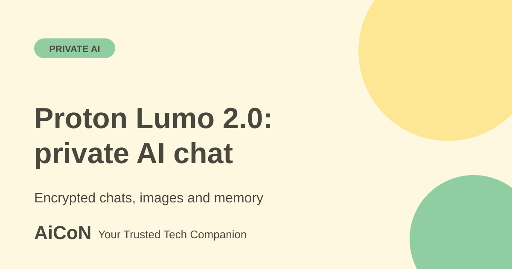

Proton Lumo 2.0: private AI chat, images and memory
Lumo is an AI assistant from Proton, the company behind Proton Mail. Version 2.0 adds image tools, stronger web search and memory. This guide explains what it does, what Proton says about privacy and what you should still check yourself.

What is Lumo?
Lumo is a chat assistant like ChatGPT or Gemini, but built around privacy. Proton says it keeps no logs of what you ask or what Lumo replies. It says saved conversations use zero-access encryption, so they can only be read on your device. It also says your chats are not used to train the model.
Lumo 2.0 was announced on 30 June 2026, so it is not brand new. We are covering it now because privacy is a common worry for readers who use AI for personal, work or school questions.
What is new in version 2.0?
- Images. You can upload an image to analyse, create an image from a prompt, edit an existing image or turn a rough sketch into a finished picture. Proton says image uploads and generated images are also protected by zero-access encryption.
- Web search. When a question needs current information, Lumo pulls live results and cites sources. Proton says it can also use live financial data and weather forecasts.
- Memory, Projects and Custom Lumos. Memory lets Lumo remember your preferences if you allow it. Proton says you decide what it keeps and forgets. Projects are encrypted workspaces for chats, files and instructions. Custom Lumos are assistants you set up for one task, such as a writing helper.
- Fast and Thinking modes. Fast is for quick answers. Thinking is for harder, multi-step questions.
Is it free?
Proton's pricing page says Lumo is free to use and you can start chatting without creating a Proton account. The Free plan says no credit card is needed. It lists limited use of the Max model, limited messages and chat history, limited image generations and one Project. Lumo Plus gives more of each and unlimited Projects and Custom Lumos.
| Free | Chat without an account. A free Proton account gives more and keeps your history. Limits apply. |
|---|---|
| Lumo Plus | Paid. The pricing page we read did not show a price in rupees, so check it in the app or on the page before you pay. |
| Image tools | Free plan has limited image generations. The exact number is not stated on the pages checked. |
How to try it, step by step
- Open lumo.proton.me in your browser, or install the Lumo app on your phone.
- Start with a plain question. You can chat without signing in, but the amount you can use is smaller.
- Create a free Proton account if you want history and more use. Use a strong password and turn on two-factor sign-in.
- To work with an image, tap the + icon under the chat window and choose Upload from device. Proton's support page describes this path. Then describe the change you want.
- Look in Lumo's settings for memory controls before you switch memory on. Decide what you are happy for it to remember.
- For anything about current events or prices, open the cited sources and check them yourself.
Who is it good for?
Lumo may suit people who want an AI assistant with a clear privacy promise: students drafting private notes, freelancers with client documents, or families who do not want chats stored for ads. It does not replace professional advice. Do not paste Aadhaar numbers, bank details or passwords into any AI chat.
What to keep in mind
Proton reports that Lumo 2.0 Lite scores 34 and Lumo 2.0 Max scores 51 on the Artificial Analysis Intelligence Index, against 15 for Lumo 1.4. These are Proton's reported numbers, and they show improvement over its own earlier version. They do not prove Lumo beats other assistants. Test it on your own questions.
Zero-access encryption protects your saved chats from Proton. It does not protect you if someone has your unlocked phone or your account password. Web search by its nature uses outside sources, so read the privacy policy to see how search requests are handled.
What changed since the short post?
The launch was on 30 June 2026, not today. This expanded guide uses current plan and image-support pages. Exact free quotas and the Indian checkout price remain unverified.
Frequently asked questions
Is Lumo made in India?
No. Proton says Lumo runs on European infrastructure, protected by Swiss privacy law.
Can I use it in Malayalam or Hindi?
We did not find a language list on the pages checked. Try a few sentences in your language and check the answers carefully.
Does it need a credit card?
The Free plan says no credit card is required.
Is "private" the same as "always correct"?
No. Privacy does not make answers more accurate. Check important facts with a reliable source.
Sources: Proton support: getting started and guest access, Lumo (Proton), Proton blog: Introducing Lumo 2.0, Lumo pricing and plans, Proton support: create and edit images in Lumo. Checked 6 October 2026.